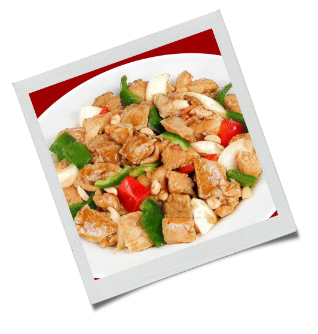

500 g de filé de frango cortado em cubos

2 colheres (sopa) de azeite de oliva
2 cebolas médias cortadas em cubos
2 dentes de alho esmagados
Sal a gosto
1 pimentão verde cortado em cubos
1 pimentão vermelho cortado em cubos
1 pimentão amarelo cortado em cubos
1 xícara (chá) de cogumelo em conserva cortado ao meio
1/4 xícara de molho shoyu
1 colher (sopa) de maisena
1/2 xícara (chá) de água
2 colheres (sopa) de amendoim torrado

Em uma frigideira ou panela grande, misture a metade do azeite de oliva, cebola, alho e deixe fritar e reserve;
Na mesma panela, coloque o sal, o restante do azeite e frite os pimentões e os cogumelos por 5 minutos e reserve;
Ainda na mesma panela, coloque o frango e frite até dourar;
Coloque todos os ingredientes novamente na frigideira, misture bem e refogue por mais 2 minutos;
Em uma xícara, misture o molho shoyu, a maisena e a água;
Mexa bem e junte a mistura de frango;
Cozinhe, mexendo constantemente, até formar um molho espesso;
Coloque em uma travessa, polvilhe com amendoim e sirva quente.